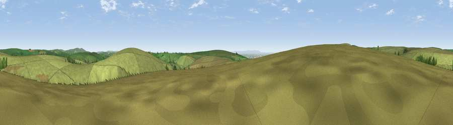

Viewpoint near Simonsbath
#24628 in England · top 51% of its area beats it · near SimonsbathWhere it is
The exact computed spot (SS 77425 36025). Click the marker for map links.
The view, rendered

A 360° render of this exact spot computed from the terrain model, tree cover and land cover — summer colours, afternoon light, calibrated against photographs of famous viewpoints. Real trees, hedges and buildings will differ in detail.
The panorama
Grey silhouette: terrain skyline in each direction (720 bearings, Earth curvature and refraction included). Dashed green: skyline with trees (+15 m) and buildings (+8 m) as obstacles. Blue strip: how far the ground is visible on each bearing.
Where the view opens
Wedge length = distance to the farthest visible ground on that bearing (vegetation-aware). Rings at 10, 25 and 50 km.
What fills the view
98% grassland · 1% woodland ·
Angular shares of the visible panorama (visual magnitude), not map area. Landscape diversity 0.05 (0–1 Shannon).
Key numbers
More beautiful places nearby
The staircase of upgrades: each row has a higher view potential than everything closer. Driving times are estimates from straight-line distance, calibrated against real road routing — check an actual route before setting out.
| Place | Direction | Drive | Score |
|---|---|---|---|
| Viewpoint near Simonsbath | E · 1 km | ~3 min | 47.8 |
| Viewpoint near Simonsbath | ESE · 2 km | ~4 min | 64.8 |
| Viewpoint near Simonsbath | W · 3 km | ~7 min | 73.1 |
| Viewpoint near Brayford | W · 4 km | ~10 min | 74.1 |
| Viewpoint near Challacombe | WNW · 8 km | ~16 min | 75.8 |
| Viewpoint near Challacombe | NW · 11 km | ~20 min | 77.1 |
| Viewpoint near Oare | NNE · 12 km | ~23 min | 81.8 |
| Viewpoint near Oare | N · 13 km | ~24 min | 83.4 |
51.11037, -3.75238 · source: screening · position refined by local search. Computed location — check access rights before visiting.